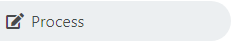
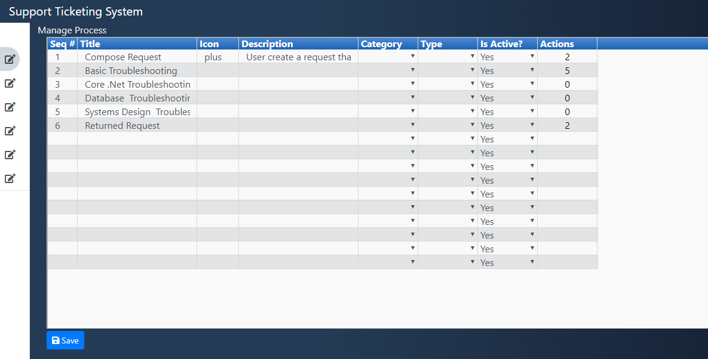

MANAGE ► PROCESS
Module Name: Process
Description: Manage Process
Program Flow:
» Move the mouse on left side bar then the menus are showing, then select or click the  to open the Process Page.

MANAGE ► STATUS
Module Name: Status
Description: Manage Status Page
Program Flow:
» Move the mouse on left side bar then the menus are showing, then select or click the  to open the Status Page.
to open the Status Page.

MANAGE ► ROLES
Module Name: Supply Roles
Description: Manage Roles Page
Program Flow:
» Move the mouse on left side bar then the menus are showing, then select or click the  to open the Process Page.
to open the Process Page.

MANAGE ► USERS
Module Name: User
Description: Manage User Page
Program Flow:
» Move the mouse on left side bar then the menus are showing, then select or click the  to open the Process Page.
to open the Process Page.

MANAGE ► APPLICATION
Module Name: Application
Description: Manage Application Page
Program Flow:
» Move the mouse on left side bar then the menus are showing, then select or click the  to open the Application Page.
to open the Application Page.

MANAGE ► SUBSCRIPTION
Module Name: Subscription
Description: Manage Subscription Page
Program Flow:
» Move the mouse on left side bar then the menus are showing, then select or click the  to open the Subscription Page.
to open the Subscription Page.